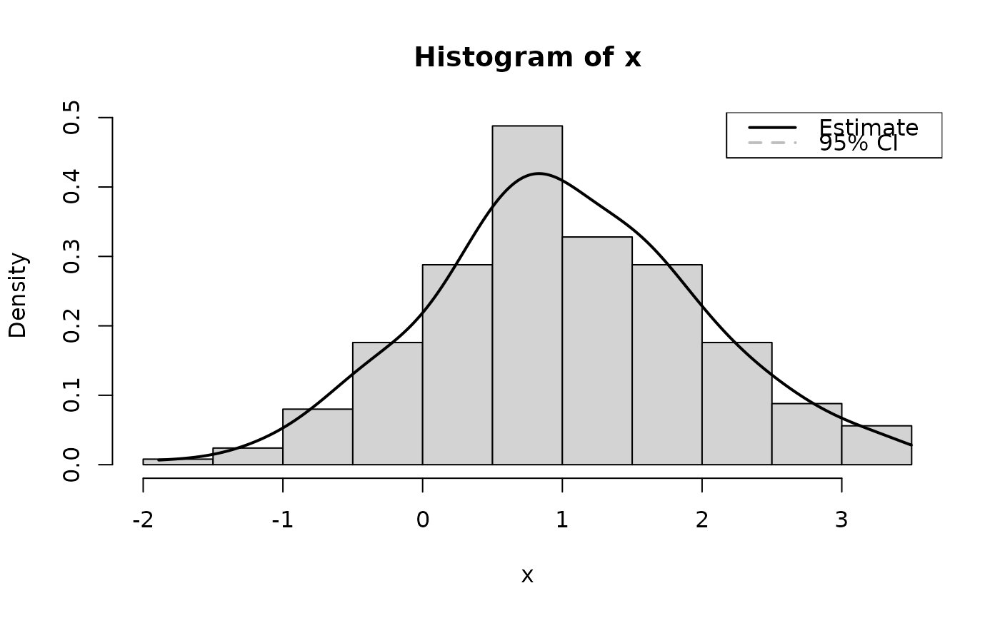

This function is a wrapper over different methods of density estimation. By default, it uses the base R density with by default uses a different smoothing bandwidth ("SJ") from the legacy default implemented the base R density function ("nrd0"). However, Deng and Wickham suggest that method = "KernSmooth" is the fastest and the most accurate.
Usage
estimate_density(x, ...)
# S3 method for data.frame
estimate_density(
x,
method = "kernel",
precision = 2^10,
extend = FALSE,
extend_scale = 0.1,
bw = "SJ",
ci = NULL,
select = NULL,
at = NULL,
group_by = NULL,
...
)Arguments
- x
Vector representing a posterior distribution, or a data frame of such vectors. Can also be a Bayesian model. bayestestR supports a wide range of models (see, for example,
methods("hdi")) and not all of those are documented in the 'Usage' section, because methods for other classes mostly resemble the arguments of the.numericor.data.framemethods.- ...
Currently not used.
- method
Density estimation method. Can be
"kernel"(default),"logspline"or"KernSmooth".- precision
Number of points of density data. See the
nparameter indensity.- extend
Extend the range of the x axis by a factor of
extend_scale.- extend_scale
Ratio of range by which to extend the x axis. A value of
0.1means that the x axis will be extended by1/10of the range of the data.- bw
See the eponymous argument in
density. Here, the default has been changed for"SJ", which is recommended.- ci
The confidence interval threshold. Only used when
method = "kernel". This feature is experimental, use with caution.- select
Character vector of column names. If NULL (the default), all numeric variables will be selected. Other arguments from
datawizard::find_columns()(such asexclude) can also be used.- at
Optional character vector. If not
NULLand input is a data frame, density estimation is performed for each group (subsets) indicated byat. See examples.- group_by
Deprecated in favour of
at.
Note
There is also a plot()-method implemented in the see-package.
Examples
library(bayestestR)
set.seed(1)
x <- rnorm(250, mean = 1)
# Basic usage
density_kernel <- estimate_density(x) # default method is "kernel"
hist(x, prob = TRUE)
lines(density_kernel$x, density_kernel$y, col = "black", lwd = 2)
lines(density_kernel$x, density_kernel$CI_low, col = "gray", lty = 2)
lines(density_kernel$x, density_kernel$CI_high, col = "gray", lty = 2)
legend("topright",
legend = c("Estimate", "95% CI"),
col = c("black", "gray"), lwd = 2, lty = c(1, 2)
)

# Other Methods
density_logspline <- estimate_density(x, method = "logspline")
density_KernSmooth <- estimate_density(x, method = "KernSmooth")
density_mixture <- estimate_density(x, method = "mixture")
 hist(x, prob = TRUE)
lines(density_kernel$x, density_kernel$y, col = "black", lwd = 2)
lines(density_logspline$x, density_logspline$y, col = "red", lwd = 2)
lines(density_KernSmooth$x, density_KernSmooth$y, col = "blue", lwd = 2)
lines(density_mixture$x, density_mixture$y, col = "green", lwd = 2)
hist(x, prob = TRUE)
lines(density_kernel$x, density_kernel$y, col = "black", lwd = 2)
lines(density_logspline$x, density_logspline$y, col = "red", lwd = 2)
lines(density_KernSmooth$x, density_KernSmooth$y, col = "blue", lwd = 2)
lines(density_mixture$x, density_mixture$y, col = "green", lwd = 2)
 # Extension
density_extended <- estimate_density(x, extend = TRUE)
density_default <- estimate_density(x, extend = FALSE)
hist(x, prob = TRUE)
lines(density_extended$x, density_extended$y, col = "red", lwd = 3)
lines(density_default$x, density_default$y, col = "black", lwd = 3)
# Extension
density_extended <- estimate_density(x, extend = TRUE)
density_default <- estimate_density(x, extend = FALSE)
hist(x, prob = TRUE)
lines(density_extended$x, density_extended$y, col = "red", lwd = 3)
lines(density_default$x, density_default$y, col = "black", lwd = 3)
 # Multiple columns
head(estimate_density(iris))
#> Parameter x y
#> 1 Sepal.Length 4.300000 0.09650527
#> 2 Sepal.Length 4.303519 0.09766644
#> 3 Sepal.Length 4.307038 0.09883222
#> 4 Sepal.Length 4.310557 0.10001063
#> 5 Sepal.Length 4.314076 0.10119336
#> 6 Sepal.Length 4.317595 0.10238484
head(estimate_density(iris, select = "Sepal.Width"))
#> Parameter x y
#> 1 Sepal.Width 2.000000 0.04651972
#> 2 Sepal.Width 2.002346 0.04733324
#> 3 Sepal.Width 2.004692 0.04816144
#> 4 Sepal.Width 2.007038 0.04899919
#> 5 Sepal.Width 2.009384 0.04984690
#> 6 Sepal.Width 2.011730 0.05071174
# Grouped data
head(estimate_density(iris, at = "Species"))
#> Parameter x y Species
#> 1 Sepal.Length 4.300000 0.2355986 setosa
#> 2 Sepal.Length 4.301466 0.2375879 setosa
#> 3 Sepal.Length 4.302933 0.2395766 setosa
#> 4 Sepal.Length 4.304399 0.2415640 setosa
#> 5 Sepal.Length 4.305865 0.2435508 setosa
#> 6 Sepal.Length 4.307331 0.2455353 setosa
head(estimate_density(iris$Petal.Width, at = iris$Species))
#> x y Group
#> 1 0.1000000 9.011872 setosa
#> 2 0.1004888 8.955399 setosa
#> 3 0.1009775 8.792239 setosa
#> 4 0.1014663 8.528268 setosa
#> 5 0.1019550 8.172719 setosa
#> 6 0.1024438 7.737660 setosa
if (FALSE) {
# rstanarm models
# -----------------------------------------------
library(rstanarm)
model <- stan_glm(mpg ~ wt + gear, data = mtcars, chains = 2, iter = 200, refresh = 0)
head(estimate_density(model))
library(emmeans)
head(estimate_density(emtrends(model, ~1, "wt")))
# brms models
# -----------------------------------------------
library(brms)
model <- brms::brm(mpg ~ wt + cyl, data = mtcars)
estimate_density(model)
}
# Multiple columns
head(estimate_density(iris))
#> Parameter x y
#> 1 Sepal.Length 4.300000 0.09650527
#> 2 Sepal.Length 4.303519 0.09766644
#> 3 Sepal.Length 4.307038 0.09883222
#> 4 Sepal.Length 4.310557 0.10001063
#> 5 Sepal.Length 4.314076 0.10119336
#> 6 Sepal.Length 4.317595 0.10238484
head(estimate_density(iris, select = "Sepal.Width"))
#> Parameter x y
#> 1 Sepal.Width 2.000000 0.04651972
#> 2 Sepal.Width 2.002346 0.04733324
#> 3 Sepal.Width 2.004692 0.04816144
#> 4 Sepal.Width 2.007038 0.04899919
#> 5 Sepal.Width 2.009384 0.04984690
#> 6 Sepal.Width 2.011730 0.05071174
# Grouped data
head(estimate_density(iris, at = "Species"))
#> Parameter x y Species
#> 1 Sepal.Length 4.300000 0.2355986 setosa
#> 2 Sepal.Length 4.301466 0.2375879 setosa
#> 3 Sepal.Length 4.302933 0.2395766 setosa
#> 4 Sepal.Length 4.304399 0.2415640 setosa
#> 5 Sepal.Length 4.305865 0.2435508 setosa
#> 6 Sepal.Length 4.307331 0.2455353 setosa
head(estimate_density(iris$Petal.Width, at = iris$Species))
#> x y Group
#> 1 0.1000000 9.011872 setosa
#> 2 0.1004888 8.955399 setosa
#> 3 0.1009775 8.792239 setosa
#> 4 0.1014663 8.528268 setosa
#> 5 0.1019550 8.172719 setosa
#> 6 0.1024438 7.737660 setosa
if (FALSE) {
# rstanarm models
# -----------------------------------------------
library(rstanarm)
model <- stan_glm(mpg ~ wt + gear, data = mtcars, chains = 2, iter = 200, refresh = 0)
head(estimate_density(model))
library(emmeans)
head(estimate_density(emtrends(model, ~1, "wt")))
# brms models
# -----------------------------------------------
library(brms)
model <- brms::brm(mpg ~ wt + cyl, data = mtcars)
estimate_density(model)
}